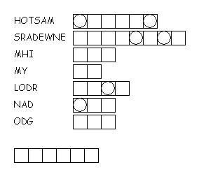

This week's lessons: Acts 2:14a, 22-32, Psalm 16, 1 Peter 1:3-9, John 20:19-31
This
week's lessons: Acts
2:14a, 22-32, Psalm
16, 1
Peter 1:3-9, John
20:19-31
Elementary School Pew-work
W I T H H T R O B A F
|
Word List |
(John 20:21-23) Jesus said to them again, "Peace be with you. As the Father has sent me, so I send you." {22} When he had said this, he breathed on them and said to them, "Receive the Holy Spirit. {23} If you forgive the sins of any, they are forgiven them; if you retain the sins of any, they are retained." (NRSV) |
from http://www.efree.mb.ca/lectionarypuzzles free to distribute for free with this notice. Words are in a straight line left to right or top to bottom |
||
|
1. How did Jesus greet his
disciples?
2. Why did Jesus breathe on
the disciples?
3.
What was Jesus' final blessing to the people?
___________________________ |
Created by Puzzlemaker at DiscoverySchool.com |
|
4. What did Jesus do to let the disciples see for themselves that he was really Jesus? _______________________________________________ 5. Why would they have NOT recognized Jesus? ________________________________________________________
6. What does
Jesus say that receiving the Holy Spirit prepares the disciples
to do?
|
|
from Mazemaker at http://hereandabove.com/maze/mazeorig.form.html